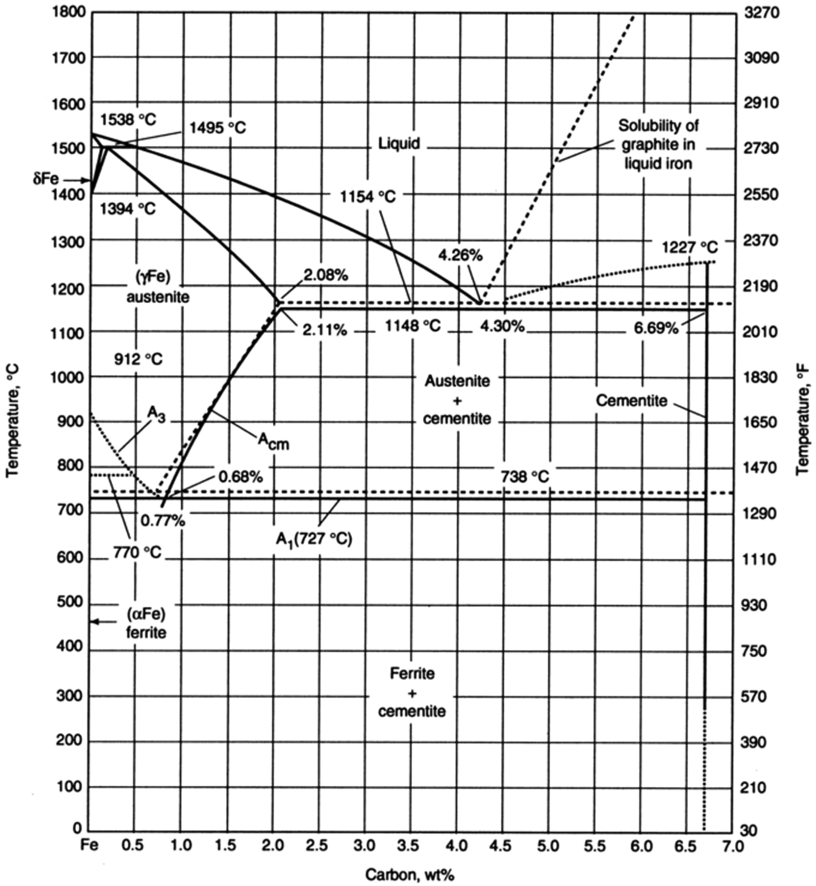
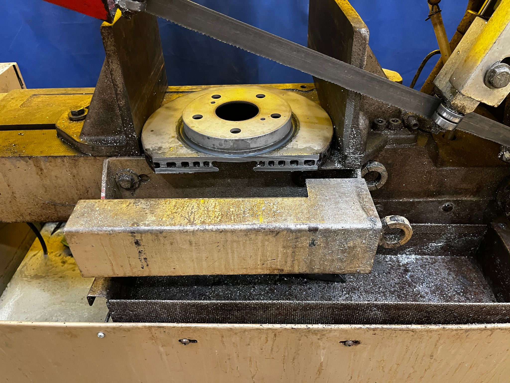
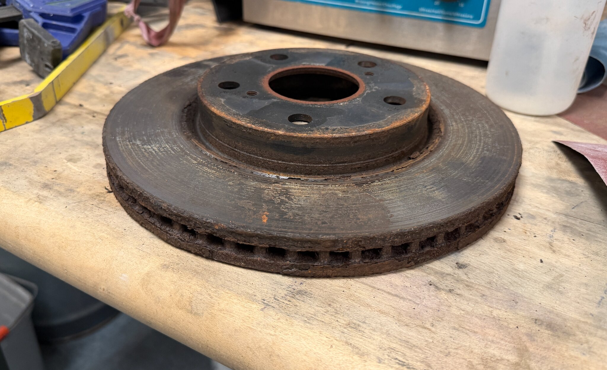

MM&E Cast Iron Project · Fall 2026
Recasting a brake rotor

01Theory & Expectations
02Casting in the Lab
03Environmental ImpactChoose a section to explore.
In this project, we cast ingots using gray cast iron [1] to investigate the material properties of the iron-carbon alloy, as well as study the difference in the microstructure when it is cast with a silicon inoculant compared to without an inoculant [3].